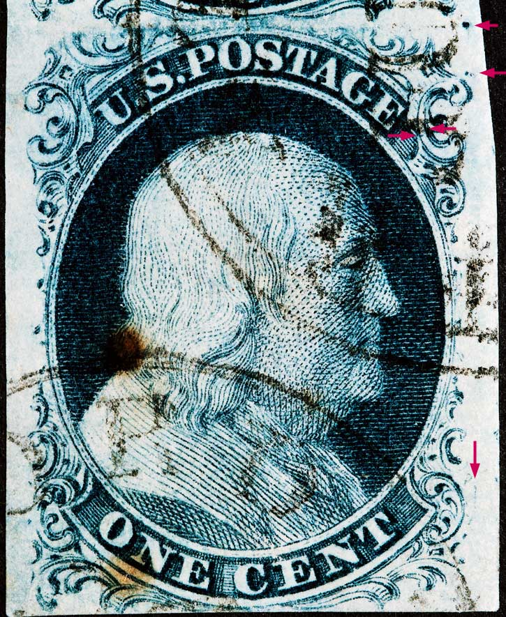

1¢ Franklin Issue of 1851-1857, PLATE 2 Position 79R2, (Scott #7) |
| Scott #7 Blue, Type II, Relief A Issued both imperforate (7) and perforated (20). PLATING NOTES: There is a vertical "candy cane" plating mark to the right of Ornament R. A vertical line of color in the right center margin- many positions show this and is not unique. Top margin patients will show the GUIDE DOT from Position 69R2 and the GUIDE DOT will have a faint vertical line of color under the dot. |
|  |
| Figure 1. (Below) Detail view of the double dot plating marks above Ornament L as illustrated in the Neinken plating diagram. Additionally there are two small dots to the left and below Ornament L1 which are not shown in the Neinken plating diagram but have been confirmed as consistent.
|
| Figure 2. (Below) The heavy dot at the extreme upper right shows a faint line protruding down vertically and is the GUIDE dot for Position 69R2. The GUIDE dot for 68R2 can be seen at the upper left as well. |
| Figure 3. (Below) A sharper impression but cut in at top. This patient shows the two small dots to the left and below Ornament L1 very clearly. |
DISCLAIMER and COPYRIGHT INFORMATION: Thanks for visiting this site. I hope you learn something new as we are making new discoveries all the time. You, the visitor, have my permission to link to my pages and to share the INFORMATION with others. The images themselves fall under the fair use guidelines established by the United States Congress and Copyright law. Basically contact us before using. I also ask in return that you send me an e-mail if I have made a mistake, or have made some other technical blunder that in my rush to put these pages up would cause the visitor confusion. Please also visit my other website at www.slingshotvenus.com. and support the live music arts. While your there, be sure to purchase our music. There are not many philatelic rock stars around and we need all the help we can get. :-) I can be reached at: nerdman@ix.netcom.com Update 8/21/2013 |